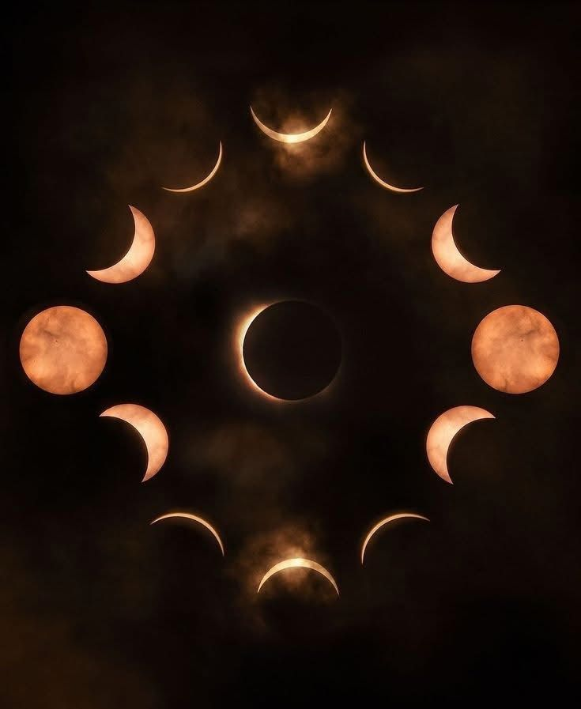

O poder das fases lunares na sua prática espiritual

"A lua não muda de forma — ela revela faces diferentes do mesmo mistério. Assim como nós."
LUA NOVA — O TEMPO DAS SEMENTES
Momento ideal para plantar intenções. Use nosso Sal 3 em 1 — Prosperidade para potencializar.
LUA CRESCENTE — O TEMPO DA AÇÃO
A lua cresce, a energia cresce. Use nosso Sal 3 em 1 — Força e Vitalidade para despertar sua energia de ação.
LUA CHEIA — O TEMPO DA ILUMINAÇÃO
A lua cheia revela. Deixe seus cristais e amuletos à luz da lua para recarga.
LUA MINGUANTE — O TEMPO DA LIMPEZA
Fase de soltar, encerrar, limpar. Use nosso Sal 3 em 1 — Limpeza Profunda com intenção de liberação.
"Você não precisa entender a lua completamente para deixar que ela te guie."
Thai TerrearMisticismo Verde — Belém, Pará